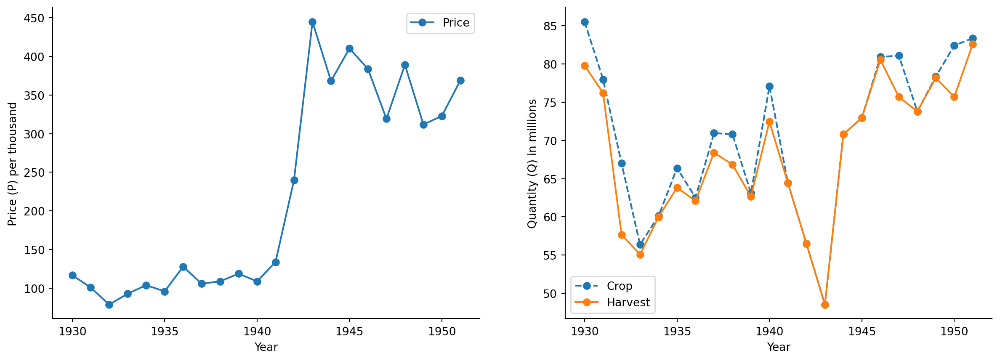
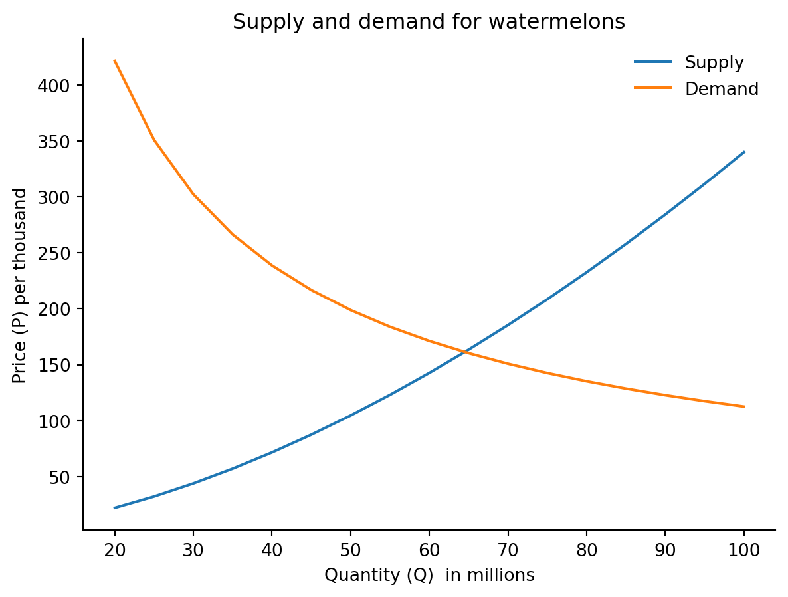

1. Plott en figur som likner på Fig 1 i Stewart Links to an external site.. Gjør deloppgave a og b
Code
# importing librariesimport pandas as pdimport numpy as npimport matplotlib.pyplot as pltimport sympy as sp# Import data from URL with the correct delimiterdf = pd.read_csv("https://uit-sok-1006-v23.github.io/data/suits_watermelons.csv", delimiter=";")# Create new variablesdf['p'] = np.exp(df.iloc[:,3])df['h'] = np.exp(df.iloc[:,2])df['q'] = np.exp(df.iloc[:,1])# making figure as a functiondef oppgave7_1(): fig, ax = plt.subplots(1, 2, figsize=(15, 5))for i inrange(2): ax[i].set_xlabel('Year') ax[i].spines['top'].set_color('none') ax[i].spines['right'].set_color('none')return fig, ax# Plotting figure 1fig, ax = oppgave7_1()ax[0].plot(df.iloc[:,0], df['p'], 'o-', label='Price')ax[0].set_ylabel('Price (P) per thousand')ax[0].legend()# plotting figure 2ax[1].plot(df.iloc[:,0], df['q'], 'o--', label='Crop')ax[1].plot(df.iloc[:,0], df['h'], 'o-', label='Harvest')ax[1].set_ylabel('Quantity (Q) in millions')ax[1].legend()# showing figureplt.show(block=False)

2. Tegn tilbud og etterspørsel. Deloppgave a, b, c , d.
Code
# Number of watermelons in millions defined in QQ = np.arange(20,105,5)# Calculate the log of the quantitylog_q=np.log(Q)# Define the supply functiondef supply():return-2.0+1.7*log_q# Define the demand functiondef demand():return8.5-0.82*log_q# Define a dataframe with the quantitydf2 = pd.DataFrame(Q, columns=['Q'])# Add the log of the quantity to the dataframedf2['log_q']=log_q# Add the supply function to the dataframedf2['supply_log_p']= supply()# Add the demand function to the dataframedf2['demand_log_p']= demand()# convert supply log prices to prices and add to the dataframedf2['supply_p']=np.exp(df2['supply_log_p'])# convert demand log prices to prices and add to the dataframedf2['demand_p']=np.exp(df2['demand_log_p'])# Showing the dataframeprint(df2)
# Plot the supply and demand functionsfig, ax = plt.subplots()ax.plot(df2['Q'], df2['supply_p'], label='Supply')ax.plot(df2['Q'], df2['demand_p'], label='Demand')ax.legend(loc='best',frameon=False)ax.set_xlabel('Quantity (Q) in millions')ax.set_ylabel('Price (P) per thousand')ax.set_title("Supply and demand for watermelons")ax.spines['top'].set_color('none')ax.spines['right'].set_color('none');

3. Tegn inn et shock til tilbud. Deloppgave a og b (IKKE c)
Code
# new supply shock functiondef new_supply():return-2.0+1.7*log_q+0.4# add new supply shock log to dataframedf2['new_supply_log_p']= new_supply()# add new supply shock prices to dataframedf2['new_supply_p'] = np.exp(new_supply())df2
Q
log_q
supply_log_p
demand_log_p
supply_p
demand_p
new_supply_log_p
new_supply_p
0
20
2.995732
3.092745
6.043500
22.037485
421.365040
3.492745
32.876064
1
25
3.218876
3.472089
5.860522
32.203943
350.907208
3.872089
48.042638
2
30
3.401197
3.782036
5.711018
43.905322
302.178574
4.182036
65.499044
3
35
3.555348
4.044092
5.584615
57.059336
266.297629
4.444092
85.122526
4
40
3.688879
4.271095
5.475119
71.600000
238.678832
4.671095
106.814648
5
45
3.806662
4.471326
5.378537
87.472655
216.704952
4.871326
130.493867
6
50
3.912023
4.650439
5.292141
104.630920
198.768561
5.050439
156.090990
7
55
4.007333
4.812466
5.213987
123.034698
183.825472
5.212466
183.546201
8
60
4.094345
4.960386
5.142637
142.648813
171.166618
5.360386
212.807022
9
65
4.174387
5.096458
5.077002
163.442028
160.292847
5.496458
243.826854
10
70
4.248495
5.222442
5.016234
185.386329
150.842146
5.622442
276.563904
11
75
4.317488
5.339730
4.959660
208.456376
142.545286
5.739730
310.980371
12
80
4.382027
5.449445
4.906738
232.629086
135.197701
5.849445
347.041816
13
85
4.442651
5.552507
4.857026
257.883295
128.641050
5.952507
384.716668
14
90
4.499810
5.649676
4.810156
284.199495
122.750774
6.049676
423.975826
15
95
4.553877
5.741591
4.765821
311.559620
117.427480
6.141591
464.792336
16
100
4.605170
5.828789
4.723760
339.946862
112.590850
6.228789
507.141124
Code
# add new supply prices to dataframeax.plot(df2['Q'], df2['new_supply_p'], label='New supply')ax.legend(loc='best',frameon=False)display(fig)
Priselastisiteten er elastisk ettersom en 1% endring i pris gir en -1.219% endring i etterspørsel
2. Tolk estimatene i tilbudslikningen (Coefficient). IKKE bry deg om “95% confidence interval”
Koeffisienten 0.580 vil si at økning på 1% i prisen vil føre til en økning på 0.58% i tilbud av vannmeloner.
En økning på 1% i prisen til bomull vil føre til en reduksjon på -0.321% i tilbud av vannmeloner.
En økning på 1% i prisen til grønnsaker vil føre til en reduksjon på -0.124% i tilbud av vannmeloner.
En økning på 1% i prisen i dummy variablen vil føre til en økning på 0.073% i tilbud av vannmeloner.
Andre verdenskrig førte til en -0.36% reduksjon i tilbudet på vannmeloner.
3. Tolk estimatene i etterspørselslikningen
En økning på 1% i pris vil gi en endret etterspørsel på -1.125% i etterspørselen for vannmeloner.
En økning på 1% i inntekt vil gi en endret etterspørsel på 1.75% i etterspørselen for vannmeloner.
En økning på 1% i jernbanefraktkostnader vil gi en endret etterspørsel på -0.968% i etterspørsel for vannmeloner.
4. Gi eksempler på shock
Andre verdenskrig - etterspørselen på vannmeloner var like mye når krigen brøt ut men tilbudet ble endret fordi gårder måtte produsere andre varer enn vannmeloner.
Populasjonsendring - etterspørselen på vannmeloner vil øke fordi flere mennesker vil kjøpe vannmeloner.